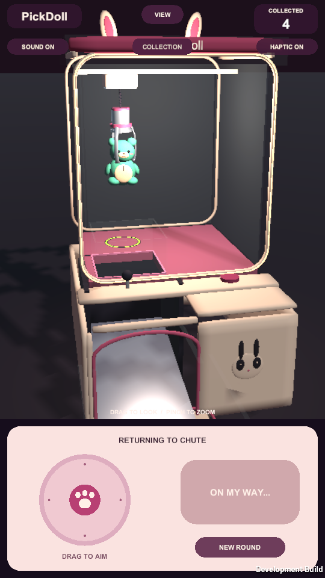
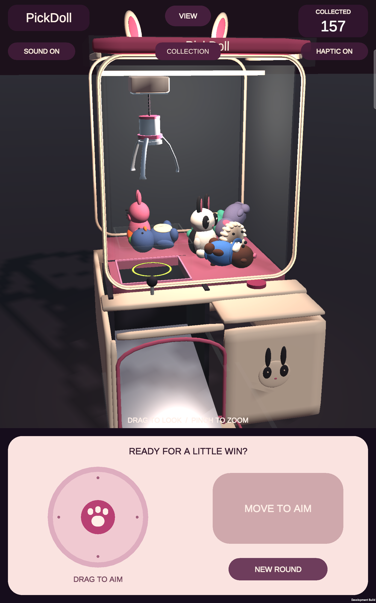

13차수 · 집게 고장 수정과 시작 화면
2026년 11월 28일 · 로컬 개발 / 버전 0.13.0 · Android 코드 17
에디터·Windows 검증 통과. 갤럭시 탭에 0.13.0 설치·실행 확인, 기존 수집 157개 보존. 장시간 운반 품평은 대기 중이다.
집게 손가락 분리
갤럭시 탭에서 인형을 잡고 운반한 뒤 집게 손가락이 분리된 고장이 두 번 보고됐다. NEW ROUND는 사용자가 정정했으므로 확정 재현 조건으로 사용하지 않는다.
기존 설정의 에디터 반복 검사에서도 연결점 이탈이 발생했다. 계산 횟수 증가만으로는 해결되지 않아 기존 힌지의 닫힘 모터를 유지하고 연결점의 위치 제약 보정을 추가했다. 손가락 각도·모터 힘·인형 위치는 초기화하지 않는다. 원래의 약한 그립과 물리적 낙하를 유지한다.
| 동일 검사 구성 · 28회 | 최대 연결점 오차 | 15mm 초과 지속 시간 |
|---|---|---|
| 수정 전 | 0.287m | 1.58초 |
| 수정 후 · 위치 보정 적용 후 | 0.005m | 0초 |
위 수치는 이번 실행의 에디터 물리 시뮬레이션 결과다. 탭에서 발생한 고장 두 건은 실제 기기에서 계속 확인한다. 이 검사는 장시간 실기기 시험을 대체하지 않는다. 실제 집기·운반·구석 접촉과 조작감은 플레이어 검증이 필요하다.


작은 로컬 진단 로그
날짜·밀리초·UTC 오프셋, 세션 경과 시간, 라운드, 하강·상승·운반·놓기 전환, 수동 리셋·자동 보충, 획득 인형과 연결점 상태를 기록한다. 위치 보정과 큰 오차는 보정 전 상태를 남기고 반복 로그를 5초 간격으로 제한한다.
기기 내부 Android/data/com.precipi.pickdoll/files/diagnostics/에 current.log와 previous.log를 보관한다. 파일당 512KiB, 합계 약 1MiB로 순환하며 자동 전송하지 않는다. 캡처 시각을 기준으로 전후 상황을 조회할 수 있다.
PC에서 Unity/tools/Get-DeviceDiagnostics.ps1 -Serial 기기번호로 가져온다.
콤보 · 시작 화면 · 아이콘
- 획득 간격을 15초로 확대. 정확히 15초는 콤보로 인정하고 중복 획득 방지와 라운드·앱 전환 초기화는 유지한다.
- 흑백 토끼와 PickDoll 글자를 사용한 크림색 시작 화면을 짧게 페이드아웃한다. Unity 기본 스플래시를 끄고 추가 대기 타이머를 두지 않는다.
- 토끼 얼굴로 Windows·Android 아이콘과 Android 적응형 아이콘 레이어를 준비했다.
검증 기록
에디터: 수정 전후 각각 28회 운반 반복, 수정 후 지속 분리 없음. 콤보 15초 경계·시간 초과·중복·초기화 통과. 검사 원문
Windows: 7종 × 기본·누운 자세의 14개 집기 시나리오 통과. 쿠션의 기본 자세는 가장자리 조준 재시도로 획득했다. 관성 회전·감쇠, 하강 전 열림, 운반·높은 곳 놓기, 출구에 걸친 토끼와 다음 인형의 개별 획득, 저장·도감·자동 보충을 확인했다. 전체 시험 수집 수는 27이며 실제 사용자 기록과 분리했다. 검사 원문

Android 0.13.0 (17), arm64 APK 빌드와 서명 검증 통과. 갤럭시 탭 SM-X820에 업데이트하고 게임 화면·진단 로그 생성을 확인했다. 설치 전후 수집 파일의 SHA-256이 일치하며 157개의 기록을 보존했다. Windows 876×1400·906×1088 화면 비율 검사도 통과했다. 실기기에서 장시간 운반·구석 접촉·시작 연출 품평은 남아 있다.

Play Games 로그인·업적·클라우드 복원은 후속 차수로 유지한다. 이번 작업은 로컬 빌드로 확인하며 CI를 자동 실행하지 않는다.
탭 품평
2026.11.28: 사용자가 현재 정상 동작을 확인했다. 장시간 안정성은 계속 관찰한다. 분리가 재발하면 캡처 시각과 로그를 대조한다.
Android 아이콘 후속 수정
전경과 배경 순서가 바뀌어 분홍색만 보이는 문제를 수정했다. 모든 6개 해상도의 APK 아이콘 레이어 검사를 통과했고, 필적인 검사를 Android 로컬 빌드 후에도 실행하도록 추가했다. 게임 코드와 데이터 29개 APK 항목은 수정 전후 완전히 동일하다. 수정 APK를 탭에 다시 설치했고 기존 수집 기록은 파일 해시 동일로 보존을 확인했다.